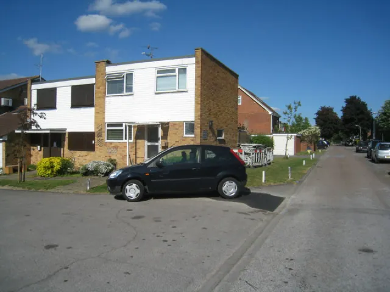

Home · Services · About · Contact · Reviews
The first hours after a fire decide how bad the damage gets. Emergency cleanup secures your property, stops water damage from firefighting, and starts the documentation your insurance claim needs — 24/7, usually same-day.

Emergency plywood/steel boarding of windows, doors and openings to secure a fire-damaged property within hours.
Typical time: Usually same-day, 2-4 hours on site
Heavy-duty tarping over fire-damaged roofing to stop water intrusion until permanent repair.
Typical time: Same-day in most cases
High-volume extraction of water left by firefighting efforts — the step most owners forget until mold starts.
Typical time: 1-2 days including initial drying
Full perimeter securing: fencing, lock changes, temporary power shutoff coordination.
Typical time: Same-day
A kitchen fire is put out at 9pm. Fire crews leave a broken window and a hole cut in the roof for ventilation. A board-up crew secures the openings the same night and tarps the roof before rain — board-up $300–$900, roof tarping $500–$1,500 (national ranges).
Plywood or steel boarding of broken windows, doors and openings to secure a fire-damaged property, prevent weather damage and unauthorized entry. Typical national range $300–$900.
As soon as the fire department clears the scene. Every hour a property stays open to weather or entry adds damage — and most policies require you to take reasonable steps to prevent further damage (duty to mitigate).
Yes — water from firefighting is a major secondary problem. Extraction typically costs $1,000–$3,500 (national ranges); water from firefighting can run $2,000–$6,000 (restorenearme.com). Water left standing leads to mold.
Emergency mitigation is usually part of a fire claim — it is the step insurers expect you to take. Keep every receipt and photo for your adjuster.
Call now for 24/7 emergency dispatch — we secure, document, and start the cleanup.
📞 Call (800) 555-0147 Now